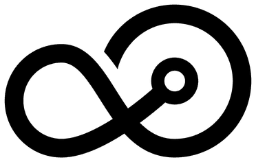

Cómputo y predimensionado. Las secciones y separaciones no están verificadas por cálculo: antes de construir validá cargas, normativa local y detalles con un profesional.
El diseño actual se puede recuperar con Deshacer.